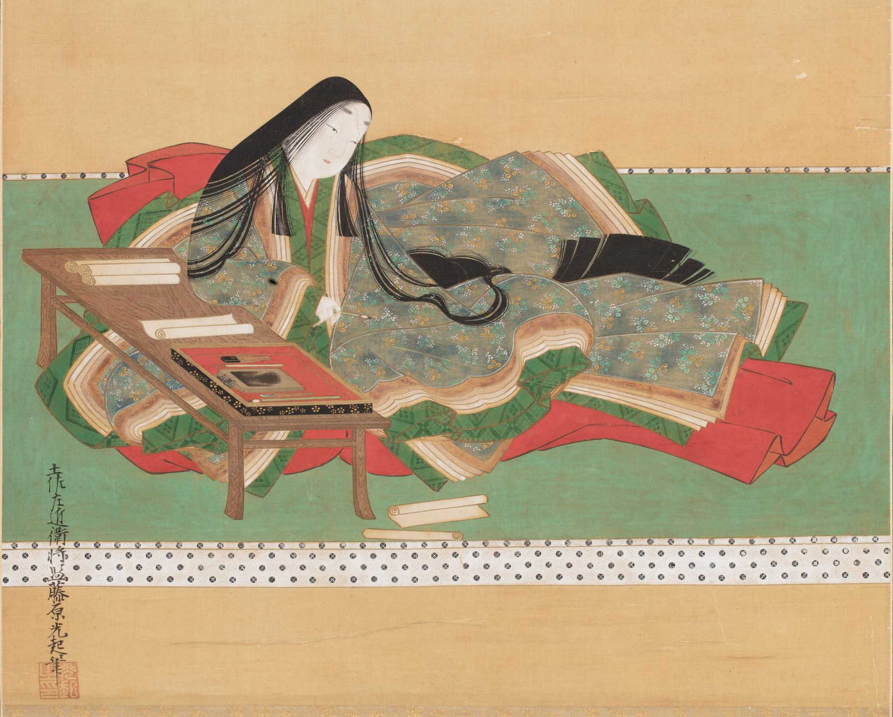

- 일본 역사와 지리
- 일본 고전문학사
- 일본학 특강 2
일본 역사와 지리
그 중에서도 가장 놀랐던 것은 내가 배웠던 부분 중에서 막부라는 존재 없이, 입김이 쎈 귀족가문에게 간섭받지 않고 천황의 힘이 가장 막강했던 것이
나라시대, 상황으로 물러나 실권을 잡은 헤이안 시대 원정기, 짧은 기간에 일부지역만 해당되지만 남북조 시대, 그리고 메이지, 쇼와 즈음뿐이었다는 것이 가장 충격적이었다.
그런 와중에 왕이란 존재가 한 번도 사라지지 않고 (물론 혈통에는 문제가 있었던 것 같지만) 존재했다는 것이 신기했다.
이에 대해서는 과거 한반도의 나라들과 비교하자면 굉장히 짧은 기간인 것 같다.
이는 외부에 의해 어린 나이에 천황이 되는 자들이 많았기 때문인 것 같다는 생각이 들었다.
하지만 맞는지 아닌지 확신이 별로 없기 때문에, 이에 대해 우리나라의 역사와 뭐가 달라서 이렇게 되었는지 알아보고 싶어졌다.
또한, 막연하게 알고 있었던 중세시대의 역사도 인상 깊었다. 그 중에서 살짝 충격적이었던 것은 가마쿠라 막부의 1대 쇼군인 미나모토 요리토모 직후부터 쇼군의 자리가 흔들리기 시작했다는 것이다. 가마쿠라 막부가 짧은 것은 알고 있었지만 미나모토 요리토모가 죽은 바로 직후부터 흔들렸을 줄은 상상도 못했다. 그리고 특히, 비구니 쇼군이라 불렸던 호조 마사코에 대한 내용은 조금 의아하게 느껴졌다. 물론 그녀가 자신의 친정인 호조 가문의 실권 장악에 힘을 써, 내정을 좌지우지한 것이 마냥 좋게 보이진 않지만, 비슷한 일은 이전에 헤이안 시대 때도, 야마토 정권일 때도 있었던 일이었고, 자신의 아들과 친아버지를 유폐한 것 또한 쉽게 정한 결정이 아닌 최선의 선택을 한 것으로 보이는 정도인데 일본 3대 악녀라고 불릴 정도인지 알 수 없었기 때문이다.

태그 정리
strong: 이거슨 강조하는 태그
u : 이건 밑줄 태그 'underline'
br: 이건 줄바꿈 태그, 닫지 않지
p : 이것은 단락 바꾸기 태그, 어디서부터 어디까지가 한 단락인지 표현하기 위해 닫지
img : 이미지 삽입 src="" 쌍따옴표 안에 소스넣기.
소스랑 윋th는 순서 상관 없음
목차는 어떻게 하느냐?
->리스트를 만든다
- ui : 부모 태그. 반드시 자식 태그가 있어야함. 리스트 항목을 포괄?(Unordered List)
- or : 번호 매겨주는 부모 태그. 마찬가지로 자식 태그 필요. (Ordered List)
- li : 자식 태그. 반드시 부모 태그가 있어야함.
head 태그: 본문 설명
title : 제목 태그. 검색 엔진은 제목 태그를 쓴 것을 바탕으로 검색.
meta charset="utf-8"+꺾새 태그를 쓰면 utf-8로 읽음
body 태그: 그 외 내용 전부 감
a : 링크 걸어주는 태그, href(hyper reference)="(주소)"
-클릭시 새 탭: target="_blank"
-가져다 댔을 때 뭔지 설명: title="(설명)"
Heading level 1
Heading level 2
Heading level 3